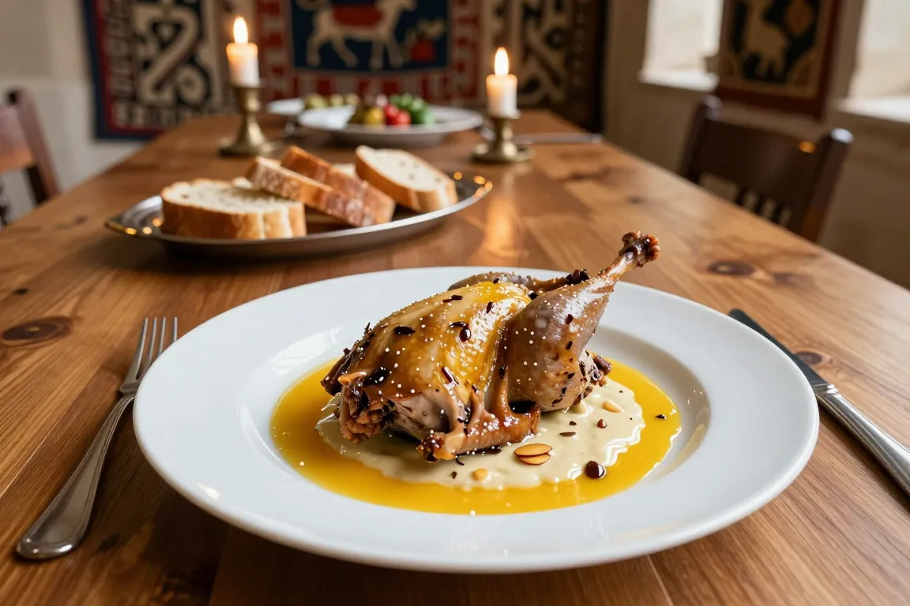

cuisine · 1300–1500 · also: Taillevent cuisine, Late medieval French cuisine
The kitchen of the late medieval court. Cooks grind spices, thicken sauces with bread and colour the dish with saffron. Sweet, sour and hot flavours meet in one sauce. Le Viandier, first written about 1300 and widened by Taillevent, records it.

Core thesis
Make the table show rank: use costly spices, bright colour and many dishes at once, and let each sauce mix sweet, sour and hot.
Design principles
Set a service of many dishes on the table at once, and let each guest take from the dishes that he can reach.
Thicken a sauce with bread crumbs that have soaked in broth, vinegar or verjuice.
Grind spices in a mortar and add them to most dishes: ginger, cinnamon, clove, pepper and grains of paradise.
Colour a dish with saffron for gold, with parsley for green and with sandalwood for red.
Sour a sauce with verjuice or vinegar, and sweeten it with sugar or honey.
Roast a bird on the spit and serve it with a spiced sauce such as cameline.
Keep the Church calendar: cook fish and almond milk on the days without meat.
Anti-patterns
A sauce thickened with a roux of flour and butter
Tomato, potato, chilli or any food from the New World